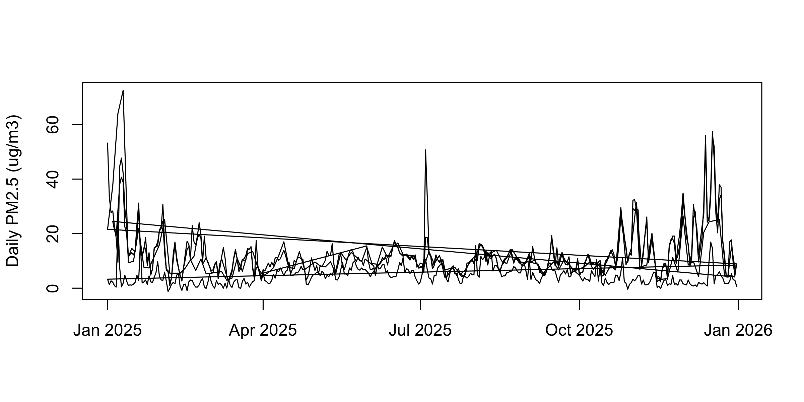
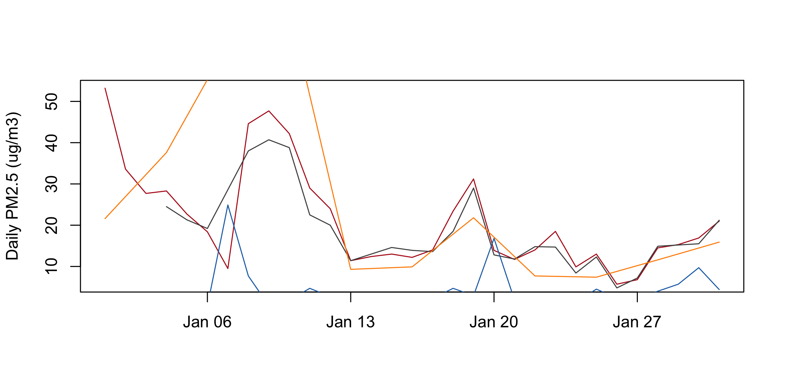
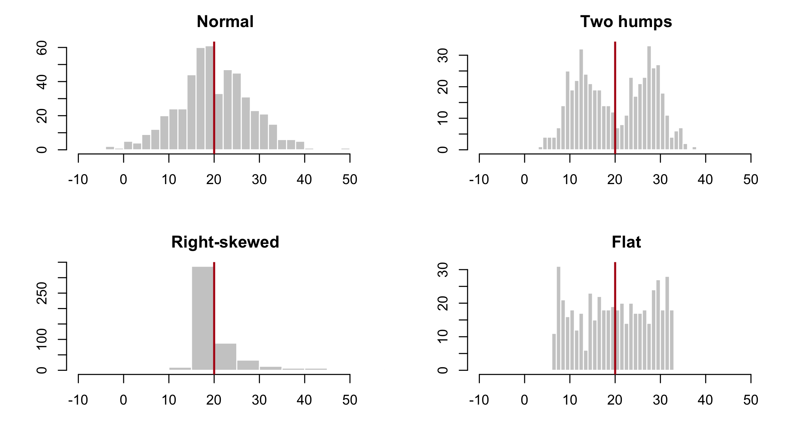
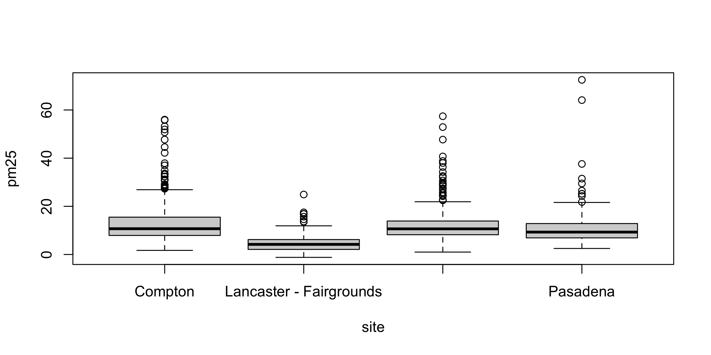
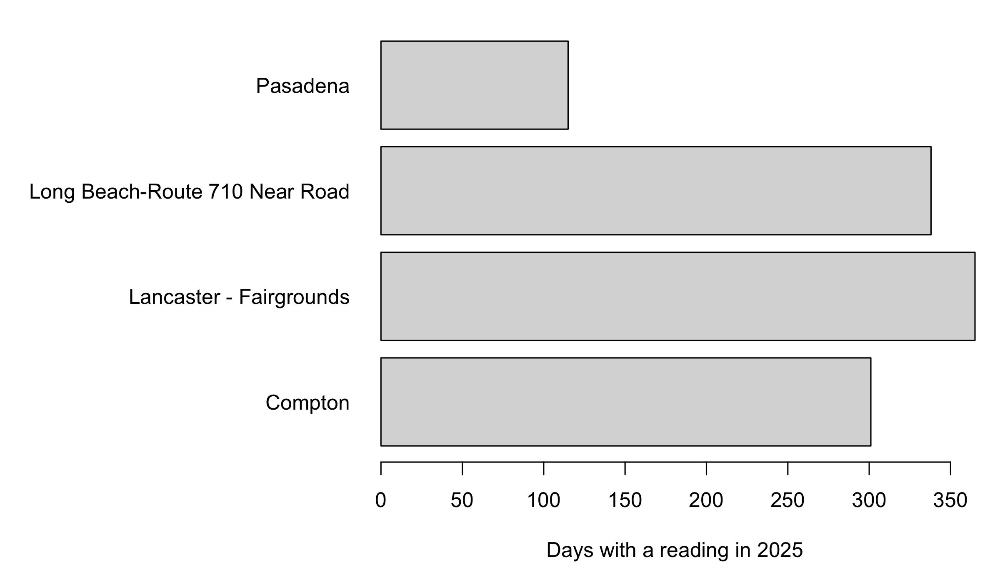
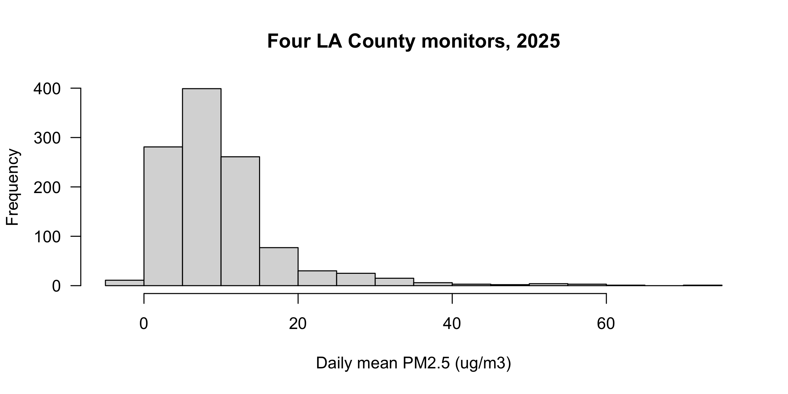
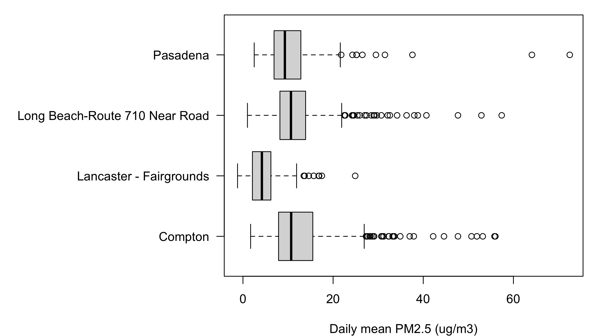
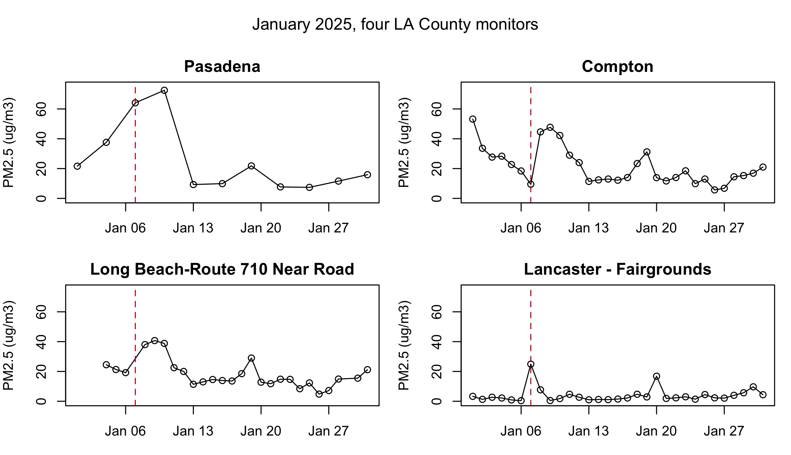
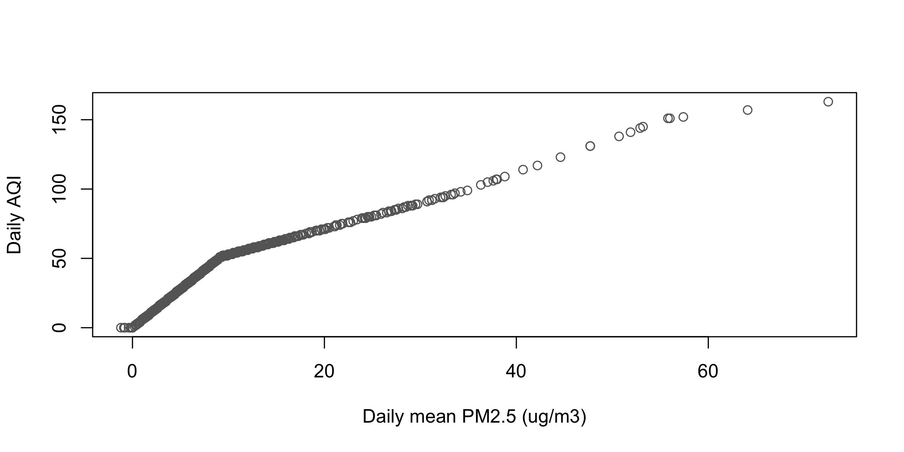

Four plots, the settings that work on all of them, panels, and how to get a figure out of R and onto disk.
Objectives
By the end of this session you can:
Name the plot that matches a question, and say what each one is bad at.
Draw one series through time, and several series on shared axes.
Read a distribution with hist(), and say when a box plot answers better.
Move the same argument — col, main, las, ylim — between plot(), hist(), boxplot() and barplot().
Split a device into panels, control which panel fills first, and put it back.
Write a figure to a file at a resolution someone else can use.
Why plot
Let your imagination be the limit to what you can ask and explore, not the tools you happen to know.
Humans are visual animals. Vision is a fundamental way we interact with the world.
Seeing a physical representation of numbers is often more impactful and easier to understand than the numbers themselves.
As a result, visualization is one of the most important skills in research (conducting it and communicating its results)
Visualization and the questions you ask
There is often more to learn from staring at the data than looking at numeric summaries of such data.
My invitation is that you cultivate a visual way to interact with data so that you can think “outside the menu” of visualization tools at your disposal.
The figures you can build can influence the hypothesis you come up with. They empower your curiosity.
Most of what goes wrong in an empirical project is visible in the data long before it reaches a regression table, and a plot is the fastest way to see it. A summary answers the question you asked; a plot answers questions you did not think to ask.
The second half of that matters just as much. Every plotting system hands you a menu of ready-made figures, and it is easy to end up asking only the questions that menu can answer. Base R does not work that way: a plot is a blank device you draw on, so the shape of the figure is your decision rather than the package’s. That is why this session spends time on the settings and the canvas rather than on a catalogue of chart types.
Polishing — fonts, palettes, figures built for a reader — is a different job and gets its own lecture, with publication-ready output. Nothing today needs to be pretty. Everything today needs to be fast, because a plot you can produce in one line is a plot you will actually make, and a plot that takes twenty minutes is one you will skip.
Getting the data
One file: every PM2.5 monitor in Los Angeles County for 2025. This chunk fetches it if you do not already have it, and does nothing if you do.
dir.create() makes a folder and showWarnings = FALSE keeps it quiet when the folder is already there. download.file() fetches a URL to a path. The if (!file.exists(f)) wrapper means you can run this line every time without re-downloading, which is the habit worth copying: a script that fetches its own inputs runs on anyone’s machine, including yours six months from now.
#>
#> Compton Lancaster - Fairgrounds
#> 301 365
#> Long Beach-Route 710 Near Road Pasadena
#> 338 115
Pasadena sits in the foothills, Compton and Long Beach down toward the coast, Lancaster out over the mountains in the high desert. Four places, one air basin, one year, and a reader can check why those four.
Three things in that chunk are new:
pm$site %in% transect asks, for every row, is this site one of these four. It saves writing four == tests joined by or.
A subset can sit on the left of the arrow. names(pm)[names(pm) == "old"] <- "new" writes into the one position that matches, and pm$date <- ... names a column that does not exist yet, so it creates it.
table() counts how often each value appears. Four names, four counts — that is the check.
And the check is not decoration. Lancaster reported all 365 days; Pasadena reported 115. Those two monitors are not on the same calendar, and every plot below has to survive that.
Choosing a plot: good for / bad for
Plot
Good for
Bad for
plot(x, y)
the relationship between two variables
more points than pixels — they pile into a blob
plot(x, y, type = "l")
one variable in its natural order, usually time
missing days: the line joins straight across them, so a gap looks like data
plot() + lines(), points()
a few series on shared axes
more than about six
hist(x)
the distribution of one variable
comparing groups
boxplot(y ~ g)
the distribution of one variable, by group
groups of two or three rows
barplot(table(g))
how often each category occurs
anything continuous — bin it, or use hist()
On the line plot’s weakness: plot(type = "l") draws a segment from each row to the next, so a month with no readings comes out as one long straight stretch rather than as a hole. Nothing warns you. type = "o" or type = "p" shows where the observations actually are, which is why the missing-data question is usually asked with points and not with a line.
Start from the question, not the plot type.Did something happen in time? is a line. Do these two move together? is a scatter. Is this variable distributed the way I think? is a histogram. Does this group differ from that one? is a box plot. Is everything here? is a bar of counts.
type picks how the points are drawn: "p" marks only, "l" a line only, "b" both with a gap at each mark, "o" both, overlaid. "l" is the one you want for a series in time.
xlab and ylab are the axis labels. The y label is where the units go, every time; a number with no unit is not a reading.
which.max(x) hands back the position of the largest value, not the value — which is what you want when the question is which day.
Now read it. 301 days in one glance. Two isolated spikes that are not weather — January 1 at 53.2 and July 4 at 50.7 — a flat stretch through April and May, and a high ragged run through December that holds the year’s maximum, 56.0 on the 13th. A six-number summary gives you none of that.
One plot() call is one series
The same call on the whole four-station frame draws three long diagonal strokes.
plot(d$date, d$pm25, type ="l",xlab ="", ylab ="Daily PM2.5 (ug/m3)")

d is stored station by station — Compton, then Pasadena, then Long Beach, then Lancaster. So the line runs Compton January to December, snaps back to January for Pasadena, and again twice more. Each snap-back is one of those diagonals.
type = "l" connects row 1 to row 2 to row 3 in the order the rows sit in the frame. It has no idea what a station is, and it will not warn you.
Cutting to January
jan <- d[d$date <as.Date("2025-02-01"), ]comp <- jan[jan$site =="Compton", ]lb <- jan[jan$site =="Long Beach-Route 710 Near Road", ]lanc <- jan[jan$site =="Lancaster - Fairgrounds", ]pas <- jan[jan$site =="Pasadena", ]xr <-as.Date(c("2025-01-01", "2025-01-31")) # one window for every panel
lines() and points(): several series
plot(comp$date, comp$pm25, type ="l", col ="#b31b1b",xlab ="", ylab ="Daily PM2.5 (ug/m3)")lines(lb$date, lb$pm25, col ="grey30")lines(lanc$date, lanc$pm25, col ="#1f6fb4")lines(pas$date, pas$pm25, col ="darkorange")

lines() draws onto the plot that is already there. It never makes a new one, and it never resizes anything. plot() sized both axes from the first series and everything after obeys them — anything outside is simply not drawn. No error, no warning.
Compton’s January runs 5.7 to 53.2, so that is the window all four series got. Three separate failures follow from it.
Setting the window and the key
plot(comp$date, comp$pm25, type ="l", col ="#b31b1b", lwd =2,ylim =c(0, 75), xlab ="", ylab ="Daily PM2.5 (ug/m3)")lines(lb$date, lb$pm25, col ="grey30")lines(lanc$date, lanc$pm25, col ="#1f6fb4")points(pas$date, pas$pm25, col ="darkorange", pch =16)legend("topright", c("Compton", "Long Beach", "Lancaster", "Pasadena"),col =c("#b31b1b", "grey30", "#1f6fb4", "darkorange"),lty =c(1, 1, 1, NA), pch =c(NA, NA, NA, 16), bty ="n")
col sets the colour of the marks. R takes an English name ("darkorange"), a grey with a number ("grey30" dark, "grey85" light), or a hex code ("#b31b1b"); colors() prints all 657 names. And c() glues values into one vector — nearly every setting today wants one.
ylim = c(0, 75) fixes the vertical window. Set it on the first call, from everything you intend to draw, because nothing after that call resizes the axes. xlim does the same horizontally.
points() adds marks without joining them — the right answer when the gaps between observations are real. pch picks the mark: 16 is a filled circle, 1 the open one plot() draws by default. lwd is line width, and lwd = 2 is how you say this is the series I want you to look at.
legend() puts a key at a named corner. lty is line type — 1 solid, 2 dashed — and it means the same thing in plot(), lines(), abline() and in the key. bty = "n" drops the box. NA inside the lty or pch vector means no sample for this entry: that is how Pasadena gets a dot and no line.
Pasadena is dots and not a line because Pasadena reports one day in three. A line through it would have drawn straight across its own peak.
Reading it
Pasadena, nearest the Eaton fire, records January’s highest reading: 72.5 on the 10th, and it was already at 64.1 on the 7th, the day the fires started. Compton and Long Beach peak a day earlier and lower — 47.7 and 40.7, both on the 9th — as the smoke reaches the coast. Lancaster, over the mountains in the high desert, stays flat through the whole episode and spikes on its own day, January 7, at 24.9: blowing dust, not smoke.
Four monitors, four stories, one screen. And Compton’s tallest January bar, 53.2, is January 1 — fireworks, six days before any fire. That reading is why the axis had to be set by hand.
hist(): the distribution of one variable
hist(d$pm25, breaks =40, col ="grey85",main ="", xlab ="Daily mean PM2.5 (ug/m3)")abline(v =0, col ="#b31b1b", lty =2)
hist() chops one numeric column into bins and draws how many rows fell in each. One column, one call.
breaks = 40 is a suggestion for how many bins; R picks round numbers near it. Ask for 40 here and you get 38.
main is the title above the plot; main = "" removes the one R writes for you.
On plot() and lines(), col colours the marks. On hist(), barplot() and boxplot() it fills them.
seq(-5, 80, by = 5) builds −5, 0, 5 … 80: every bin edge written out by hand instead of guessed at. That is how you take control of breaks when the suggestion is not good enough.
What the histogram says
summary(d$pm25)
#> Min. 1st Qu. Median Mean 3rd Qu. Max.
#> -1.200 4.900 8.400 9.947 12.100 72.500
Right-skewed: the mean, 9.947, sits above the median, 8.400. That is what skew looks like in numbers — a few large values dragging the average up past the middle.
And there is a bar left of zero. Nobody asked for that, and no summary line above draws attention to it except the minimum, which you have to notice.
Four columns with the same mean and sd
set.seed(1)std <-function(x, m =20, s =8) (x -mean(x)) /sd(x) * s + mq <-list("Normal"=std(rnorm(500)),"Two humps"=std(c(rnorm(250, -2), rnorm(250, 2))),"Right-skewed"=std(rlnorm(500, 0, 1)),"Flat"=std(runif(500)))round(sapply(q, function(x) c(mean =mean(x), sd =sd(x), max =max(x))), 2)
#> Normal Two humps Right-skewed Flat
#> mean 20.00 20.00 20.00 20.00
#> sd 8.00 8.00 8.00 8.00
#> max 49.94 37.72 138.53 32.97
The same four columns as histograms
op <-par(mfrow =c(2, 2), mar =c(4, 4, 2.5, 1))invisible(lapply(names(q), function(nm) {hist(q[[nm]], breaks =30, xlim =c(-10, 55), col ="grey80",border ="white", main = nm, xlab ="", ylab ="")abline(v =mean(q[[nm]]), col ="#b31b1b", lwd =2)}))

par(op)
All four columns have a mean of 20.00 and a standard deviation of 8.00, to two decimal places. You have just computed a mean and an sd on a real column; here are four columns that agree on both and share almost nothing else.
The maxima give the game away — 49.94, 37.72, 138.53, 32.97 — but only because you went looking. The two numbers you actually reported cannot separate a bell from two humps from a hard skew.
op <-par(mfrow =c(2, 2), mar =c(4, 4, 1, 1))plot(anscombe$x1, anscombe$y1)plot(anscombe$x2, anscombe$y2)plot(anscombe$x3, anscombe$y3)plot(anscombe$x4, anscombe$y4)
par(op)
Francis Anscombe built these four datasets in 1973 to make exactly this point, and they ship inside R as anscombe. Every x mean is 9.0, every y mean is 7.5, and every correlation is 0.816 or 0.817.
The pictures are a loose linear cloud; a smooth arch with nothing linear about it; a straight line plus one outlier that drags the fit; and ten identical x values with one far point that invents the entire correlation.
The previous slide made the point about shapes. This one makes it about relationships. Same lesson: a summary is a compression, and compression throws away structure you needed.
boxplot(): one column by groups
boxplot(pm25 ~ site, data = d)

Read pm25 ~ site aloud as “pm25 by site”. The tilde is R’s word for “split by”.
data = d says which frame those two bare, unquoted names live in.
The heavy line is the median; the box holds the middle half; the whiskers reach the ordinary range; anything past them is drawn as its own dot. A dot is a candidate for a look, not a verdict.
boxplot() and table() put the groups in alphabetical order — not the order you named them, and not the order of the values. Read the labels, not the positions.
Medians, in the order the boxes appear: Compton 10.70, Lancaster 4.20, Long Beach 10.65, Pasadena 9.30. The three basin stations agree to within a twentieth of a microgram. Lancaster sits at less than half. Whisker tops run 26.9, 11.9, 21.9, 21.6, and the outlier counts are 28, 8, 28, 10.
The box plot answers a question the histogram cannot: not what shape is this column but does this group differ from that one. A histogram holds one column, so four columns would be four histograms.
And a box built from three rows looks exactly as confident as a box built from three hundred. Count first.
Labels R drops without warning
Look again at the axis on that figure. R drew two labels and silently dropped the other two. Nothing warned you.
The mechanism: the plot region is 6.76 inches wide, so each of the four slots gets 1.69 inches. "Lancaster - Fairgrounds" needs 1.77 inches and "Long Beach-Route 710 Near Road" needs 2.57. When labels do not fit, R falls back to drawing every second one rather than overlapping them.
This is not a boxplot() problem, and no argument to boxplot() fixes it. It is a problem with the canvas the plot was drawn on, and we repair it two sections from here.
barplot(table()): counts of categories
op <-par(mar =c(4, 15, 1, 1))barplot(table(d$site), horiz =TRUE, las =1, col ="grey85",xlab ="Days with a reading in 2025")

par(op)
barplot() draws a count table as bars. table() counts, barplot() draws — that pair is how you ask is everything here?
horiz = TRUE lays the bars sideways, which is what you do when the category names are long. On boxplot() the same idea is spelled horizontal = TRUE.
las turns the axis text. 0 is R’s default, parallel to its axis; 1 makes everything horizontal and readable; 2 turns it perpendicular, which is how long category names fit.
365, 338, 301, 115, alphabetical from the bottom. Pasadena’s 115 is not a gap in a working monitor — it is a one-day-in-three sampling schedule, and it is why Pasadena had to be drawn as dots.
That par(mar = ...) line is doing the work that fixes the box plot’s missing labels. Two sections from now it stops being a magic incantation.
# Three minutes. The histogram had a bar left of zero.## 1. Print the readings below zero.# 2. Print which station filed them.# 3. One sentence: keep them or delete them?## Two answers to compare with the room: a count, and one station name.
d$pm25[d$pm25 <0]
#> [1] -1.2 -0.1 -0.8 -0.9 -0.1 -0.1 -0.4 -0.2
unique(d$site[d$pm25 <0])
#> [1] "Lancaster - Fairgrounds"
Eight readings, all Lancaster. Keep them. They are real published measurements, and the file says why if you ask it two more questions:
unique(d$Method.Description[d$pm25 <0]) # which instrument
#> [1] "Met One BAM-1020 Mass Monitor w/VSCC"
round(tapply(d$pm25, d$site, mean), 2) # how clean the air is there
#> Compton Lancaster - Fairgrounds
#> 13.38 4.48
#> Long Beach-Route 710 Near Road Pasadena
#> 12.21 11.67
Two conditions have to hold at once, and Lancaster is the only site where both do. It is the one monitor on a different instrument. A BAM measures mass by firing beta particles through an hour’s worth of dust on a filter tape and reading how much got absorbed; that is a difference between two noisy counts, so near the detection limit it can come out below zero. The other seven sites weigh a filter instead, and every one of them has a positive minimum. And it is the cleanest site, at 4.48 µg/m³ against 11–13 elsewhere — the only place where the true concentration sits close enough to zero for the noise to cross it.
EPA publishes the negative on purpose. AQS accepts values down to the negative of the method detection limit and asks submitters not to substitute zero, because zero-substitution biases every average computed from the data. Deleting these eight would do the same thing to yours. Note that Daily.AQI.Value reads 0 on those days: the index is floored at zero, the measurement is not.
Three more days read exactly 0.0, which is a legal reading — below zero is the finding, zero is not.
Arguments that work on every plot
Argument
Means the same in plot(), hist(), boxplot(), barplot()
main =
title above the plot
xlab =, ylab =
axis labels; units go in ylab
col =
colour of the marks, or the fill
las =
rotation of the axis numbers and labels
xlim =, ylim =
the window on each axis
lwd =, lty =
line width, line type
The same arguments on a histogram
hist(d$pm25, col ="grey85", las =1,main ="Four LA County monitors, 2025",xlab ="Daily mean PM2.5 (ug/m3)")

The bar chart two sections back used col, las and xlab on a different function with a different data shape. Same words, same meaning. That is the whole point of learning them once.
Layers: what draws on top
A plot is a stack. plot(), hist(), boxplot() and barplot() each start a new one. Everything else draws on top of what is already there, in the order you call it — so the last call wins where they overlap.
Layer
What it adds
points(x, y)
marks
lines(x, y)
a joined line
abline(h =, v =)
a horizontal or vertical reference line
text(x, y, "label")
a label at data coordinates
legend("topright", ...)
the key
axis(side, at =, labels =)
an axis you write yourself
mtext("...", side =)
text out in the margin, outside the frame
text(x, y, "label") writes at data coordinates: a position in the units of the plot, not in inches, not in pixels.
axis() draws an axis where R’s default was wrong. Sides are numbered from the bottom, clockwise: 1 bottom, 2 left, 3 top, 4 right. Suppress the default first with xaxt = "n" or yaxt = "n", then draw yours with at and labels, which must be the same length.
mtext() writes into the margin instead of into the plot; side = 3 is the top.
Call a layer before any plot exists and R says Error in plot.xy(...) : plot.new has not been called yet. A layer needs something to land on.
par(): the device, not the plot
par("mar") # 5.1 4.1 4.1 2.1 -- R's default
#> [1] 5.1 4.1 4.1 2.1
op <-par(mar =c(3, 3, 1, 1)) # set it, and keep the old value in oppar("mar") # 3 3 1 1 -- still, and for every plot after
#> [1] 3 3 1 1
par(op) # put it back
par("mar"), with a name in quotes, reads a setting. par(mar = c(...)), with an =, writes it — and hands you back the old value.
The idiom is op <- par(...) then par(op) at the end. Type the second line before you type the plot. Every mysterious plot you will ever draw is a par() somebody forgot to put back.
mar is the margin around this panel: bottom, left, top, right, measured in lines of text. The default is c(5.1, 4.1, 4.1, 2.1).
par(mar): giving labels room
op <-par(mar =c(4, 15, 1, 1))boxplot(pm25 ~ site, data = d, horizontal =TRUE, las =1,xlab ="Daily mean PM2.5 (ug/m3)", ylab ="", col ="grey85")

par(op)
One margin line is par("csi") = 0.2 inches, and the longest label is 2.567 inches wide — just under 13 lines. Fifteen leaves room for the gap.
Three settings did three jobs: mar bought the space, las = 1 turned the text upright, and horizontal = TRUE moved the long names onto the axis that has room for them.
par(mfrow) and par(mfcol): panels
mfrow fills across the rows. mfcol fills down the columns. Same grid, same size, different order — so the fourth plot you draw lands somewhere else.
par(mfrow = c(2, 3)) and par(mfcol = c(2, 3)) split the device into exactly the same six boxes. The only difference is the order R walks them, and that order is the order your plot() calls land in.
mfrow = c(2, 3)
mfcol = c(2, 3)
top row
1 · 2 · 3
1 · 3 · 5
bottom row
4 · 5 · 6
2 · 4 · 6
par("mfrow") and par("mfcol") both report 2 3 whichever one you set. The grid is readable back out of par(); the fill order is not. Set it once, at the top, and do not guess later.
Four stations, four panels
op <-par(mfrow =c(2, 2), mar =c(3, 4, 2, 1), oma =c(0, 0, 3, 0))invisible(lapply(transect, function(s) { x <- jan[jan$site == s, ]plot(x$date, x$pm25, type ="o", ylim =c(0, 75), xlim = xr, main = s,xlab ="", ylab ="PM2.5 (ug/m3)")abline(v =as.Date("2025-01-07"), col ="#b31b1b", lty =2)}))mtext("January 2025, four LA County monitors", outer =TRUE, line =1)

par(op)
mar belongs to a panel; oma belongs to the device. oma = c(0, 0, 3, 0) reserves three lines across the top of the whole device, and mtext(..., outer = TRUE, line = 1) writes into the second of them. A per-panel main could never span four panels.
type = "o" draws the line and the points, so you can still see where the real observations are. That is why Pasadena’s panel is honest: eleven circles, and the line between them is visibly interpolation.
xlim = xr is load-bearing. Long Beach’s January starts on the 4th, so without it the January 7 rule would sit at a different horizontal position in that panel than in the other three, and the four panels would stop being comparable.
Three things to check on any panel figure: every panel on the same ylim and xlim, one outer title rather than four inner ones, and par(op) on the last line.
png() and dev.off(): writing to disk
png("compton.png", width =1600, height =900, pointsize =26)plot(comp_y$date, comp_y$pm25, type ="l", col ="grey30",xlab ="", ylab ="Daily PM2.5 (ug/m3)")abline(h =35, col ="#b31b1b", lty =2)dev.off() # without this the file is unusable
#> quartz_off_screen
#> 2
file.exists("compton.png")
#> [1] TRUE
png() opens a file as the drawing device. From that line on, nothing appears on screen — every plotting call goes into the file instead. dev.off() closes it and writes it out.
You must call dev.off(). Forget it and the file is truncated or empty, and every plot you draw afterwards keeps going into it while your screen stays blank. If your plots have mysteriously stopped appearing, you have an open device: call dev.off() until R says null device.
width and height are in pixels here. pointsize is the base text size, and it is the setting people forget: enlarge a figure without enlarging the type and the labels come out unreadably small.
Resolution, bitmap, and vector
# Same figure, three ways.png("fig-draft.png", width =800, height =600) # screen draftplot(comp$date, comp$pm25, type ="l"); dev.off()png("fig-print.png", width =2400, height =1800, res =300) # print qualityplot(comp$date, comp$pm25, type ="l"); dev.off()cairo_pdf("fig-final.pdf", width =7, height =5) # vector, in inchesplot(comp$date, comp$pm25, type ="l"); dev.off()
Bitmap formats — png(), jpeg(), tiff() — store a grid of pixels. res sets how many pixels make an inch. At the default 72 the figure looks fine on screen and blurry the moment it is printed or enlarged, which is why a plot that looked sharp in RStudio turns soft in Word. Raising res without raising width and height shrinks the figure; raise all three together.
Vector formats — cairo_pdf(), cairo_ps() — store the lines and shapes themselves, so there is no resolution to get wrong and no pixellation at any size. Their width and height are in inches, not pixels. Journals normally want vector for anything that is not a photograph.
Decide early. Converting a folder of bitmaps to vector after a paper is accepted means redrawing every figure.
# Four minutes.## 1. Add ONE line above the four plot() calls so they fill a 2 x 2 grid.# 2. Run it. Which station landed in the BOTTOM-LEFT panel?# 3. Change ONE word in your line so that Pasadena lands TOP-RIGHT.## Two answers to compare with the room: a station name, and one word.# your line goes hereplot(comp$date, comp$pm25, type="l", lwd=2, ylim=c(0,75), xlim=xr, main="Compton")plot(lb$date, lb$pm25, type="l", lwd=2, ylim=c(0,75), xlim=xr, main="Long Beach")plot(pas$date, pas$pm25, type="l", lwd=2, ylim=c(0,75), xlim=xr, main="Pasadena")plot(lanc$date, lanc$pm25, type="l", lwd=2, ylim=c(0,75), xlim=xr, main="Lancaster")# put the device back
op <-par(mfrow =c(2, 2), mar =c(3, 4, 3, 1))# ... the four plot() calls ...par(op)
mfrow = c(2,2)
mfcol = c(2,2)
top-left
Compton
Compton
top-right
Long Beach
Pasadena
bottom-left
Pasadena
Long Beach
bottom-right
Lancaster
Lancaster
Bottom-left is Pasadena. The one word is mfrow → mfcol.
plot(x, y): two columns against each other
plot(d$pm25, d$Daily.AQI.Value,xlab ="Daily mean PM2.5 (ug/m3)", ylab ="Daily AQI", col ="grey40")

1,119 points on one bent curve, with visible knees near 9 and near 35. The AQI-to-PM2.5 ratio falls from about 5.6 at the low end to 3.55 at 20 and 2.25 at 72.5. AQI is not PM2.5 times a constant — it is a piecewise-linear lookup, and the scatter draws the breakpoints without anyone telling it they exist.
round(cor(d$pm25, d$Daily.AQI.Value), 3)
#> [1] 0.947
A correlation of 0.947 says “these move together” and hides the kinks completely. The scatter is the only plot here that shows a shape of relationship rather than a level. Its bad-for: 1,119 points read fine; 100,000 would be a solid blob.
# Everything below uses d, comp_y, jan, comp, lb, lanc, pas and xr, all# built earlier in this script. Every plot needs one written sentence that# reads it.# Choosing the plot# 1. Name the function you would reach for, one word each:# (a) How did PM2.5 at Compton move through 2025?# (b) How does the spread of daily readings compare across the four?# (c) What does the distribution of every reading look like?# (d) How many days did each station report?# One series# 2. Draw Lancaster's whole year as a line. What is its highest reading,# and on what day?# 3. Draw Compton's December only, as a line. Add a dashed horizontal# reference line at 35 ug/m3. How many December days cleared it?# Distributions# 4. Histogram of d$pm25 with default bins. How many bins did you get,# and where does the first one start?# 5. Draw it again with breaks = 5, then breaks = 40. Which one changes# the shape you would report, and which only the resolution?# 6. Histogram of Lancaster's readings only, with breaks = seq(-5, 30, 2.5).# One sentence on how its shape differs from the pooled column.# Groups and counts# 7. Box plots of pm25 by station, on their side, all four names legible.# Which station has the widest box, and is that the same as the highest?# 8. Box plots of Compton's pm25 by month. Two months look strange --# count the days in each month and say why.# 9. Bar chart of how many days each station reported, sorted from most to# fewest. (Hint: sort() works on a table.)# Several series# 10. Replicate this figure. January 2025, one panel: Compton in red, Long# Beach in grey, Lancaster in blue, all lwd = 2, y from 0 to 60, a# dashed horizontal line at 35, and a legend with no box in the top# right. Title: "January 2025, three stations". Then say what Lancaster# does that the other two do not.# 11. Compton's whole year twice, stacked in two panels: once type = "l",# once type = "p". The line tells one lie the points do not. Find it.# Panels and the canvas# 12. Four histograms, one per station, in a 2 x 2 grid, all on the same# breaks and the same x range. Put the device back when you are done.# 13. Take exercise 10's figure and give it a left margin of 6 lines, a# y-axis label written with mtext(), and horizontal axis numbers.# To disk# 14. Write exercise 12's figure to "stations.png" at 2000 x 1500 pixels# with pointsize = 30. Open the file. Then write the same figure to# "stations.pdf" with cairo_pdf() at 8 x 6 inches, and open that.# Zoom both to 400%. Which one still has clean edges?
# 1 (a) plot (b) boxplot (c) hist (d) barplot# 2 the year's high is 24.9, on 2025-01-07 -- the windstorm day itself.# Lancaster's worst day of the whole year is blowing dust, not smokelan_y <- d[d$site =="Lancaster - Fairgrounds", ]plot(lan_y$date, lan_y$pm25, type ="l", xlab ="", ylab ="PM2.5 (ug/m3)")max(lan_y$pm25); lan_y$date[which.max(lan_y$pm25)]# 3 five days clear 35; December is the year's worst month at this monitordec <- comp_y[comp_y$date >=as.Date("2025-12-01"), ]plot(dec$date, dec$pm25, type ="l", xlab ="", ylab ="PM2.5 (ug/m3)")abline(h =35, col ="#b31b1b", lty =2)sum(dec$pm25 >35)# 4 16 bins, first break at -5: the negatives hide inside a bar that looks# like it starts at zeroh <-hist(d$pm25)length(h$counts); h$breaks[1]# 5 breaks = 5 gives five bins twenty units wide: everything above 20# collapses into three near-empty bars and the skew stops being# readable. breaks = 40 gives 38 bins two units wide -- more# resolution on the same shape, not a different shapehist(d$pm25, breaks =5)hist(d$pm25, breaks =40)# 6 a much tighter, less skewed column: Lancaster's mass sits under 8 with# a short tail, where the pooled column runs past 70hist(d$pm25[d$site =="Lancaster - Fairgrounds"], breaks =seq(-5, 30, 2.5),main ="", xlab ="PM2.5 (ug/m3)")# 7 Compton has the widest box (7.9 to 15.5) and also the highest median,# but Long Beach is within a twentieth of it -- spread and level are# different questionsop <-par(mar =c(4, 15, 1, 1))boxplot(pm25 ~ site, data = d, horizontal =TRUE, las =1,xlab ="PM2.5 (ug/m3)", ylab ="")par(op)# 8 April and May: the regulatory sampler was down, so those boxes are# built from 2 and 1 readings and mean nothingcomp_y$month <-format(comp_y$date, "%m")boxplot(pm25 ~ month, data = comp_y)table(comp_y$month)# 9op <-par(mar =c(4, 15, 1, 1))barplot(sort(table(d$site)), horiz =TRUE, las =1,xlab ="Days with a reading in 2025")par(op)# 10 Lancaster stays flat through the fire week and spikes on Jan 7 itselfplot(comp$date, comp$pm25, type ="l", col ="#b31b1b", lwd =2,ylim =c(0, 60), xlab ="", ylab ="PM2.5 (ug/m3)",main ="January 2025, three stations")lines(lb$date, lb$pm25, col ="grey30", lwd =2)lines(lanc$date, lanc$pm25, col ="#1f6fb4", lwd =2)abline(h =35, lty =2)legend("topright", c("Compton", "Long Beach", "Lancaster"),col =c("#b31b1b", "grey30", "#1f6fb4"), lwd =2, bty ="n")# 11 the line draws straight across April and May, where there are almost# no readings; the points show the gap for what it isop <-par(mfrow =c(2, 1), mar =c(3, 4, 2, 1))plot(comp_y$date, comp_y$pm25, type ="l", xlab ="", ylab ="PM2.5", main ="type = l")plot(comp_y$date, comp_y$pm25, type ="p", xlab ="", ylab ="PM2.5", main ="type = p")par(op)# 12 same skew everywhere, but Lancaster's is compressed against zeroop <-par(mfrow =c(2, 2), mar =c(4, 4, 2, 1))invisible(lapply(sort(unique(d$site)), function(s)hist(d$pm25[d$site == s], breaks =seq(-5, 75, 2.5), xlim =c(-5, 75),main = s, xlab ="", cex.main =0.8)))par(op)# 13op <-par(mar =c(4, 6, 2, 1), las =1)plot(comp$date, comp$pm25, type ="l", col ="#b31b1b", lwd =2,ylim =c(0, 60), xlab ="", ylab ="",main ="January 2025, three stations")lines(lb$date, lb$pm25, col ="grey30", lwd =2)lines(lanc$date, lanc$pm25, col ="#1f6fb4", lwd =2)abline(h =35, lty =2)mtext("Daily PM2.5 (ug/m3)", side =2, line =4, las =0)par(op)# 14 the PDF. A bitmap has a fixed pixel grid, so zooming shows the grid;# a vector file stores the lines themselves and redraws them at any sizepng("stations.png", width =2000, height =1500, pointsize =30)op <-par(mfrow =c(2, 2), mar =c(4, 4, 2, 1))invisible(lapply(sort(unique(d$site)), function(s)hist(d$pm25[d$site == s], breaks =seq(-5, 75, 2.5), xlim =c(-5, 75),main = s, xlab ="")))par(op)dev.off()cairo_pdf("stations.pdf", width =8, height =6)op <-par(mfrow =c(2, 2), mar =c(4, 4, 2, 1))invisible(lapply(sort(unique(d$site)), function(s)hist(d$pm25[d$site == s], breaks =seq(-5, 75, 2.5), xlim =c(-5, 75),main = s, xlab ="")))par(op)dev.off()
Quick reference
The four plots
Code
What it draws
plot(x, y)
two columns against each other, one point per row
plot(x, y, type = "l")
one series in its natural order; "p""b""o" are the other marks
hist(x, breaks = 40)
the distribution of one variable; breaks is a suggestion